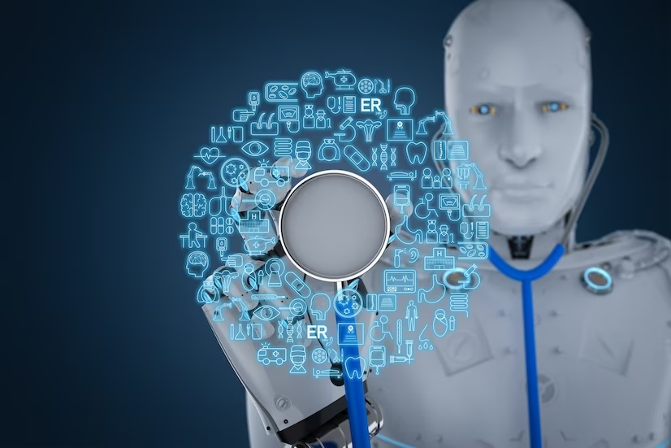

Os avanços da inteligência artificial na medicina.
← Página anterior | Voltar a página principal| Próxima página →
Por: Emma Bovary - 20/06/2023

A inteligência artificial tem desempenhado um papel cada vez mais importante na medicina, trazendo avanços significativos para a área da saúde. Com a capacidade de analisar grandes quantidades de dados médicos e aprender com eles, a IA oferece novas possibilidades de diagnóstico, tratamento e cuidados personalizados. Neste artigo, exploraremos os avanços da inteligência artificial na medicina, destacando suas aplicações e o impacto que está causando no campo da saúde.
Diagnóstico assistido por computador: A IA tem sido usada com sucesso no auxílio ao diagnóstico médico, permitindo análises precisas de exames de imagem, como radiografias, tomografias e ressonâncias magnéticas. Algoritmos de IA são treinados para identificar padrões e anomalias, ajudando os médicos a realizar diagnósticos mais precisos e rápidos.
Medicina de precisão: A IA desempenha um papel fundamental na medicina de precisão, que busca personalizar o tratamento com base nas características individuais dos pacientes. Através da análise de dados genômicos, históricos médicos e outros fatores, a IA pode ajudar a identificar tratamentos mais eficazes e prever a resposta do paciente a determinados medicamentos ou terapias.
Descoberta de medicamentos e pesquisa médica: A IA tem o potencial de acelerar a descoberta de novos medicamentos e terapias. Algoritmos de aprendizado de máquina podem analisar grandes conjuntos de dados moleculares e genéticos, identificar alvos terapêuticos promissores e até mesmo projetar moléculas com propriedades terapêuticas. Isso pode levar a avanços significativos no tratamento de doenças complexas.
Assistência médica virtual e chatbots: A IA também está sendo utilizada para fornecer assistência médica virtual, onde chatbots e assistentes virtuais interagem com os pacientes, oferecendo orientações, triagem de sintomas e até mesmo encaminhando para serviços médicos adequados. Isso permite uma maior acessibilidade aos cuidados de saúde e alivia a carga dos profissionais de saúde.
Questões éticas e desafios: O uso da IA na medicina também traz consigo questões éticas e desafios. Questões relacionadas à privacidade dos dados, confiabilidade dos algoritmos e responsabilidade dos profissionais de saúde precisam ser consideradas.